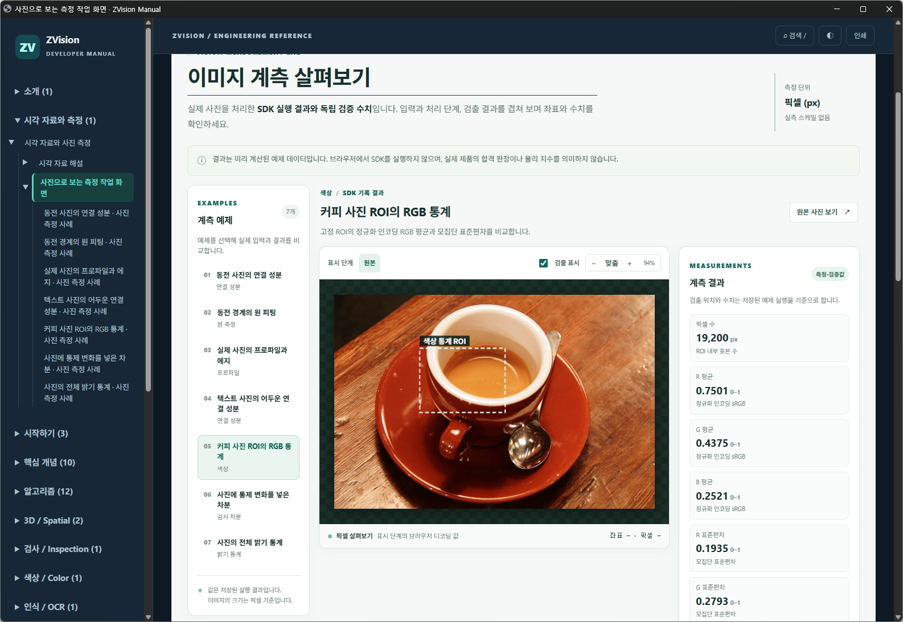

커피 사진 ROI의 RGB 통계
고정 ROI의 정규화 인코딩 RGB 평균과 모집단 표준편차를 비교합니다.



측정 결과와 단위
| 측정값 | 결과 | 단위 | 해석 |
|---|---|---|---|
| 픽셀 수 | 19200 | px | ROI 내부 표본 수 |
| R 평균 | 0.750085 | 0–1 | 정규화 인코딩 sRGB |
| G 평균 | 0.437458 | 0–1 | 정규화 인코딩 sRGB |
| B 평균 | 0.25208 | 0–1 | 정규화 인코딩 sRGB |
| R 표준편차 | 0.19351 | 0–1 | 모집단 표준편차 |
| G 표준편차 | 0.279322 | 0–1 | 모집단 표준편차 |
| B 표준편차 | 0.278818 | 0–1 | 모집단 표준편차 |
처리 순서
- ROI 선택 ·
ZImage.roi원본 컬러 영상의 실제 픽셀을 선택합니다. - RGB 통계 ·
ZImage.color_statistics채널별 정규화 인코딩 RGB 통계를 계산합니다.
표시 영역과 실제 처리 범위
원본의 (160, 100)을 원점으로 하는 160×120 ROI를 SDK에 전달하여 색상 통계를 계산합니다.
색상 통계 ROI: x=160, y=100, 폭=160, 높이=120 px. 이 사각형의 의미와 실제 연산 범위는 위 설명을 따릅니다.
파라미터
- ROI = (160, 100, 160, 120)
- (x,y,width,height) 픽셀
어떻게 검증했는가
NumPy RGB/255 평균 및 ddof=0 표준편차와 비교
사진과 결과를 해석할 때
공개 예제 사진을 입력으로 사용한 재현 예시입니다. 사용자 생산 영상이 아닙니다.
길이와 면적은 픽셀 및 픽셀 제곱입니다. 실제 치수·장비 정확도·생산 합격 판정이 아닙니다.
사진의 원본 데이터 설명과 사용 조건 · Rachel Michetti · CC0